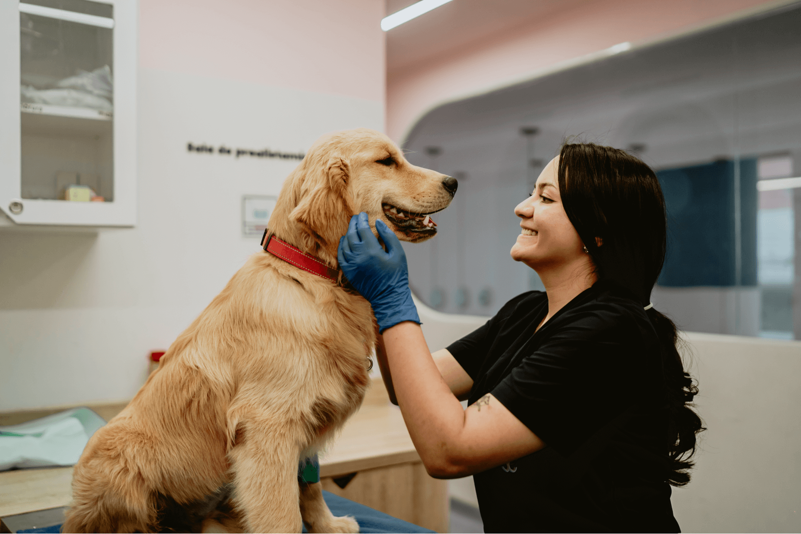
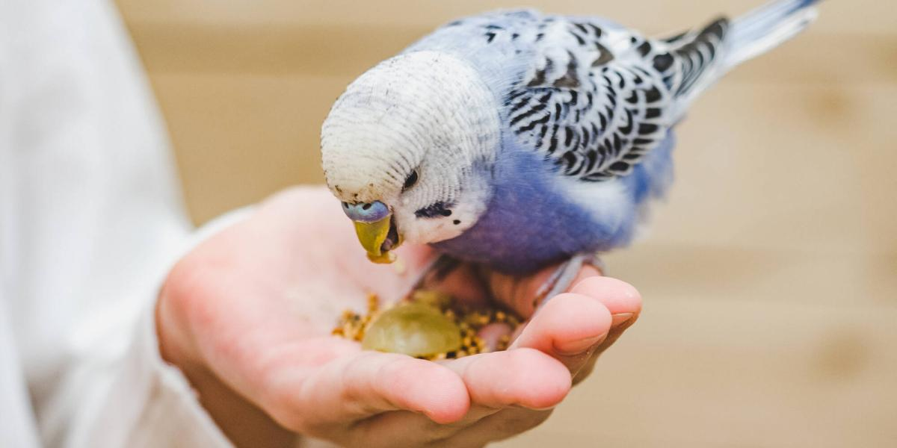

Cuidar de una mascota es una responsabilidad que va más allá de cubrir sus necesidades básicas; implica velar por su bienestar físico, mental y emocional. Cada animal requiere atención específica para llevar una vida plena, desde una buena alimentación y ejercicio hasta afecto, estimulación y un entorno seguro. Este compromiso diario fortalece el vínculo entre humanos y animales, y representa un acto de amor que enriquece a ambos.
Las mascotas dependen completamente de nosotros para su bienestar. Brindarles cuidado adecuado no solo es una responsabilidad, sino también una forma de demostrar nuestro amor y crear vínculos duraderos con nuestros compañeros.
Proporcionar alimentación balanceada, agua fresca, ejercicio regular, atención veterinaria preventiva y mucho amor. También es importante mantener un ambiente seguro y estimulante para su desarrollo.
Las mascotas tienen sentimientos, necesidades y merecen respeto. Requieren compromiso a largo plazo, cuidados constantes y consideración por su bienestar físico y emocional durante toda su vida.
Adoptar una mascota es un compromiso de por vida que incluye gastos veterinarios, tiempo, dedicación y mucha paciencia. Es importante evaluar nuestras capacidades antes de tomar esta decisión tan importante.
Las mascotas aportan compañía, reducen el estrés, fomentan la actividad física y enseñan responsabilidad. Estudios demuestran que mejoran la salud mental y física de sus cuidadores.
El entrenamiento adecuado y la socialización temprana son fundamentales para que las mascotas sean felices y bien adaptadas. Esto incluye enseñar buenos modales y acostumbrarlas a diferentes situaciones.
Los perros son compañeros leales que requieren cuidado integral para mantener su bienestar físico y emocional. Desde la preparación del hogar hasta la atención veterinaria, cada aspecto del cuidado canino es fundamental para garantizar una vida larga y feliz a nuestros amigos de cuatro patas.

Asegurar el hogar contra posibles peligros es el primer paso para crear un ambiente seguro y confiable para tu perro. Esto implica analizar meticulosamente cada zona y establecer barreras o medidas preventivas que reduzcan el riesgo de accidentes domésticos.

El perro necesita tanto un "lugar propio" donde retirarse como áreas amplias para moverse y jugar. Diseñar zonas diferenciadas para descanso, alimentación y juego contribuye a su bienestar físico y emocional.

Mantener un entorno limpio protege la salud del perro y facilita la convivencia. Un protocolo de limpieza regular ayuda a controlar parásitos, malos olores y alérgenos.

Una entrada suave al nuevo hogar y la exposición controlada a estímulos externos aceleran el proceso de adaptación y favorecen un temperamento equilibrado.

Una alimentación adecuada es clave para el desarrollo, mantenimiento y longevidad del perro. Debe ajustarse a la etapa vital, raza, tamaño y nivel de actividad.

La calidad de los ingredientes es determinante para maximizar la asimilación y reducir riesgos de reacciones adversas.
Ciertos alimentos provocan desde malestar digestivo hasta fallos orgánicos agudos. Conocerlos evita emergencias veterinarias.

Un programa de salud proactivo extiende la vida y minimiza complicaciones. Incluye revisiones periódicas, esquemas de vacunación y control de parásitos.

Mantener piel, oídos, uñas y dientes en óptimas condiciones previene infecciones y enfermedades crónicas. La higiene oral es crucial para la calidad de vida y la digestión adecuada.

La actividad física regula el peso y fortalece huesos, músculos y sistema cardiovascular. La estimulación cognitiva previene el aburrimiento y las conductas destructivas.
Los gatos son compañeros independientes pero cariñosos que requieren cuidados específicos adaptados a su naturaleza felina. Su capacidad de trepar, su curiosidad innata y su instinto de caza hacen que necesiten un entorno enriquecido y seguro para prosperar física y emocionalmente.

Crear un entorno seguro para un gato implica contemplar tanto su capacidad de trepar como su curiosidad innata. La seguridad del hogar debe adaptarse a su comportamiento natural exploratorio.

Los gatos hacen vida en vertical, por lo que es fundamental proporcionarles estructuras para trepar y espacios elevados que satisfagan sus necesidades naturales.

La limpieza adecuada es crucial para la salud del gato y la armonía del hogar. Los felinos son muy exigentes con la higiene de su entorno.

La introducción gradual y respetuosa es clave para que el gato se adapte exitosamente a su nuevo hogar sin generar estrés o comportamientos problemáticos.

Los gatos son carnívoros obligados con necesidades nutricionales muy específicas que difieren significativamente de otros animales domésticos.

La calidad de los ingredientes determina la salud a largo plazo del gato. Es fundamental leer y entender las etiquetas nutricionales.
Muchos alimentos seguros para humanos son extremadamente peligrosos para los gatos y pueden causar intoxicaciones graves o mortales.

Los gatos tienen un impulso de sed naturalmente bajo, por lo que es crucial fomentar activamente su consumo de agua.

La medicina preventiva es fundamental para detectar problemas de salud temprano y mantener al gato en óptimas condiciones durante toda su vida.

El mantenimiento de la higiene corporal complementa el acicalamiento natural del gato y previene problemas de salud comunes.

Los gatos necesitan actividad física y mental regular para mantener un peso saludable y prevenir comportamientos destructivos.
Respetar la personalidad individual del gato mientras se fomenta un vínculo saludable es clave para su bienestar emocional.

Aunque los gatos son independientes, pueden aprender comportamientos específicos mediante técnicas de refuerzo positivo.
La cirugía reproductiva aporta beneficios significativos para la salud y comportamiento del gato.
Preparar adecuadamente al gato para viajes reduce significativamente su estrés y garantiza su seguridad.
Las aves son mascotas inteligentes y sociales que requieren cuidados especializados y un entorno enriquecido. Su capacidad de vuelo, su inteligencia avanzada y sus necesidades sociales complejas hacen que requieran atención detallada para mantener su salud física y bienestar psicológico.

El diseño del entorno de un ave debe priorizar la prevención de accidentes y su bienestar psicológico. La seguridad es fundamental para estas mascotas tan activas y curiosas.
.jpg)
Las aves necesitan espacios que satisfagan su impulso natural de trepar, posarse y explorar en diferentes niveles y texturas.
.jpg)
La limpieza rigurosa es esencial para prevenir enfermedades respiratorias y parasitarias, comunes en aves domésticas.
.jpg)
La introducción cuidadosa y el respeto por los ritmos naturales del ave son cruciales para una adaptación exitosa.
.jpg)
La nutrición aviar requiere balance específico para prevenir deficiencias nutricionales y mantener la salud óptima.
La calidad de los ingredientes determina la salud a largo plazo del ave y previene problemas metabólicos comunes.
Muchas sustancias comunes son extremadamente tóxicas para las aves y pueden causar intoxicaciones mortales rápidamente.
El agua fresca y limpia es crucial para la salud digestiva y el mantenimiento del plumaje en aves domésticas.
.jpg)
La medicina preventiva especializada en aves es fundamental para detectar problemas de salud temprano y mantener su bienestar.
.jpg)
El mantenimiento físico regular previene problemas comunes y mantiene la funcionalidad natural del ave.
.jpg)
Las aves requieren actividad física y mental intensa para mantener su salud psicológica y prevenir comportamientos estereotipados.
.jpg)
La interacción social adecuada es crucial para el bienestar emocional de las aves, animales altamente sociales por naturaleza.
.jpg)
Las aves son extremadamente inteligentes y responden bien al entrenamiento positivo, lo que fortalece el vínculo y proporciona estimulación mental.
.jpg)
En aves de compañía no se practica la castración quirúrgica; se utilizan métodos ambientales y dietéticos para controlar el comportamiento reproductivo.
.jpg)
La preparación cuidadosa para viajes reduce significativamente el estrés del ave y garantiza su seguridad durante el transporte.
Conoce al equipo apasionado detrás de PetsGuide, dedicado a brindar la mejor información para el cuidado responsable de tus mascotas.
Nuestro amor por los animales y la experiencia personal de cuidar mascotas nos motivó a crear esta plataforma. Hemos vivido la alegría de compartir nuestros hogares con perros, gatos y aves, y también hemos enfrentado los desafíos que conlleva ser responsables de otro ser vivo.
Nos dimos cuenta de que muchas personas, especialmente quienes tienen mascotas por primera vez, necesitan acceso a información confiable y práctica sobre el cuidado animal. Por eso decidimos compilar nuestros conocimientos y experiencias en una guía completa que pueda ayudar a otros cuidadores responsables.
Creemos firmemente que una mascota bien cuidada no solo es más feliz y saludable, sino que también fortalece el vínculo especial entre humanos y animales. Nuestro objetivo es contribuir al bienestar animal y apoyar a las familias que han decidido abrir sus corazones a estos maravillosos compañeros.
Fundadora de la pagina
Creadora de ideas clave para la página, en seccion de imagenes, le gustan los perros y tiene 3 mascotas, 2 perritos y un gatito.
Fundador de la Pagina
Amante a las mascotas, uno de los principales creadores del código de la página tiene 4 mascotas, 3 perros y una gata. Quiere fundar un albergue para perritos y gatitos de la calle.
Fundadora de la pagina
Próxima veterinaria, quiere estudiar medicina veterinaria con el objetivo de proteger Y cuidar a los animales. Una de las principales creadoras del codigo de la página. Tiene un perrito.
Conoce a algunos de los adorables compañeros que nos inspiran cada día


Contactanos
Comparte tu experiencia y consejos sobre el cuidado de mascotas
Deja tu comentario